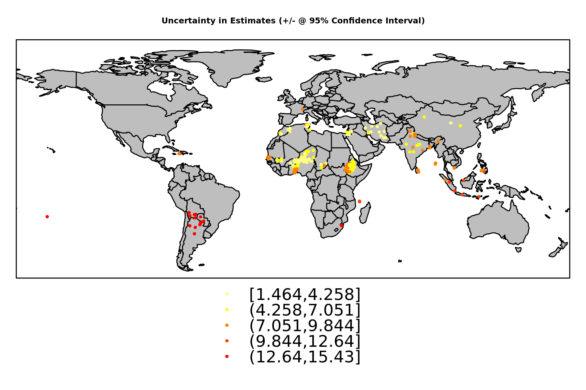

Figure 1. Mean Estimated Impacts from Causal Tree and Random Forest Estimation Strategies.
In this illustration, the blue vertical line is the global estimate of impact from the random forest. The range of uncertainty is illustrated using a histogram, indicating the proportion of simulations which result in positive or negative estimates. Specific confidence intervals can be calculated for this global estimate, or for individual project locations. A map of project location uncertainties is presented below.
| Statistic | Mean | St. Dev. | Min | Median | Max |
| Dist. to Rivers (m) | 127,555.40 | 1,191,218.00 | 768.75 | 2,188.57 | 15,768,872.00 |
| Dist. to Roads (m) | 26,899.14 | 137,135.40 | 172.55 | 3,080.46 | 1,413,334.00 |
| Elevation (m) | 646.54 | 670.31 | 1.71 | 428.01 | 4,291.84 |
| Slope (degrees) | 3.09 | 3.75 | 0.08 | 1.17 | 21.05 |
| Urb. Dist. (rel) | 424.42 | 564.19 | 6.95 | 244.94 | 5,112.51 |
| Pop. Density (2000) | 152.53 | 429.19 | 0.03 | 64.18 | 6,888.64 |
| Protected Area % | 44.42 | 86.79 | 0.00 | 0.00 | 306.01 |
| Treecover (2000, %) | 18.51 | 25.12 | 0.00 | 4.29 | 95.72 |
| Latitude | 12.57 | 15.11 | -32.11 | 13.16 | 46.29 |
| Longitude | 36.91 | 51.69 | -169.96 | 35.35 | 171.15 |
| Max Precip. (2002, mm) | 223.22 | 149.39 | 2.65 | 187.74 | 786.60 |
| Min Precip (2002, mm) | 11.88 | 25.34 | 0.00 | 0.00 | 162.10 |
| Mean Precip (2002, mm) | 79.23 | 67.09 | 0.52 | 52.71 | 383.99 |
| Max Temp (2002, C) | 29.06 | 5.21 | 1.62 | 29.10 | 38.75 |
| Min Temp (2002, C) | 18.12 | 7.79 | -13.94 | 20.60 | 27.50 |
| Mean Temp (2002, C) | 23.91 | 5.48 | -5.06 | 25.76 | 30.27 |
| Nightime Lights (2002, Relative) | 2.03 | 6.71 | 0.00 | 0.02 | 60.72 |
| NDVI (2002, Unitless) | 2,065.30 | 760.43 | 417.79 | 1,900.29 | 4,034.74 |
| MFA Land projects with Monetary Threshold | 1.00 | 0.00 | 1 | 1 | 1 |
| 2013 Forest Cover (Sq. km) | 3.93 | 12.18 | 0.00 | 0.01 | 155.62 |
| Dependent variable: | |
| treatment | |
| Dist. to Rivers (m) | 0.0000 (-0.0000, 0.0000) |
| Dist. to Roads (m) | 0.0000 (-0.0000, 0.0000) |
| Elevation (m) | 0.001*** (0.0004, 0.001) |
| Slope (degrees) | -0.05 (-0.12, 0.02) |
| Urb. Dist. (rel) | -0.0002 (-0.001, 0.0002) |
| Pop. Density (2000) | -0.0001 (-0.001, 0.0004) |
| Protected Area % | 0.01*** (0.003, 0.01) |
| Treecover (2000, %) | 0.06*** (0.04, 0.07) |
| Latitude | -0.01* (-0.03, 0.002) |
| Longitude | 0.01*** (0.004, 0.02) |
| Max Precip. (2002, mm) | 0.01*** (0.004, 0.01) |
| Min Precip (2002, mm) | 0.06*** (0.03, 0.08) |
| Mean Precip (2002, mm) | -0.03*** (-0.04, -0.02) |
| Max Temp (2002, C) | 0.42*** (0.23, 0.61) |
| Min Temp (2002, C) | 0.19*** (0.06, 0.33) |
| Mean Temp (2002, C) | -0.46*** (-0.78, -0.14) |
| Nightime Lights (2002, Relative) | 0.02 (-0.01, 0.06) |
| NDVI (2002, Unitless) | -0.001*** (-0.001, -0.0003) |
| Constant | -4.86*** (-7.17, -2.55) |
| Observations | 809 |
| Akaike Inf. Crit. | 919.42 |
| Note: | *p<0.1; **p<0.05; ***p<0.01 |

| Mean Diff. | eQQ Med | eQQ Mean | eQQ Max | |
| Propensity Score | 73.013 | 72.485 | 72.633 | 70.691 |
| Dist. to Rivers (m) | 72.714 | 14.097 | 22.554 | 0 |
| Dist. to Roads (m) | 96.490 | 34.190 | 81.591 | 95.780 |
| Elevation (m) | 30.259 | 42.993 | 25.881 | -2.173 |
| Slope (degrees) | -328.415 | 52.770 | 0.123 | -14.333 |
| Urb. Dist. (rel) | 88.281 | 51.089 | 40.108 | -9.785 |
| Pop. Density (2000) | -458.139 | -41.370 | -62.829 | -88.304 |
| Protected Area % | 58.812 | 0 | 58.892 | 21.802 |
| Treecover (2000, %) | 63.655 | 81.762 | 62.823 | 64.140 |
| Latitude | 71.424 | -6.997 | 5.499 | 18.366 |
| Longitude | 74.216 | 61.613 | 48.407 | 5.555 |
| Max Precip. (2002, mm) | 54.679 | -9.040 | 32.060 | 10.158 |
| Min Precip (2002, mm) | 76.085 | 0 | 75.094 | 46.671 |
| Mean Precip (2002, mm) | 53.488 | 26.316 | 45.379 | 40.892 |
| Max Temp (2002, C) | 76.801 | 70.683 | 54.044 | 26.482 |
| Min Temp (2002, C) | 83.581 | -133.605 | 9.809 | 15.495 |
| Mean Temp (2002, C) | 80.497 | 39.345 | 41.616 | 12.074 |
| Nightime Lights (2002, Relative) | -260.055 | 100 | 8.335 | -20.897 |
| NDVI (2002, Unitless) | 6.961 | -1.594 | 11.812 | -6.767 |
| Dependent variable: | |
| 2013 Forest Cover (Sq. km) | |
| treatment | 0.03 (-0.05, 0.10) |
| Dist. to Rivers (m) | -0.07 (-0.17, 0.02) |
| Dist. to Roads (m) | -0.12** (-0.22, -0.03) |
| Elevation (m) | -0.19** (-0.37, -0.02) |
| Slope (degrees) | -0.12* (-0.26, 0.01) |
| Urb. Dist. (rel) | 0.14*** (0.03, 0.25) |
| Pop. Density (2000) | -0.01 (-0.18, 0.16) |
| Protected Area % | -0.05 (-0.13, 0.04) |
| Treecover (2000, %) | 0.47*** (0.33, 0.62) |
| Latitude | -0.07 (-0.19, 0.05) |
| Longitude | -0.05 (-0.17, 0.08) |
| Max Precip. (2002, mm) | 0.20* (-0.01, 0.41) |
| Min Precip (2002, mm) | 0.13* (-0.002, 0.26) |
| Mean Precip (2002, mm) | -0.27* (-0.58, 0.04) |
| Max Temp (2002, C) | -0.38 (-0.90, 0.14) |
| Min Temp (2002, C) | -0.65** (-1.28, -0.02) |
| Mean Temp (2002, C) | 0.67 (-0.34, 1.67) |
| Nightime Lights (2002, Relative) | -0.01 (-0.12, 0.09) |
| NDVI (2002, Unitless) | 0.05 (-0.07, 0.17) |
| Urb. Dist. (rel) *Treatment | 0.16*** (0.06, 0.27) |
| Dist. to Rivers (m) *Treatment | -0.03 (-0.12, 0.06) |
| Dist. to Roads (m) *Treatment | -0.12** (-0.22, -0.03) |
| Pop. Density (2000) *Treatment | 0.02 (-0.13, 0.16) |
| Latitude *Treatment | -0.12** (-0.24, -0.005) |
| Longitude *Treatment | -0.05 (-0.17, 0.08) |
| NDVI (2002, Unitless) *Treatment | 0.03 (-0.09, 0.14) |
| Elevation (m) *Treatment | -0.10 (-0.27, 0.07) |
| Slope (degrees) *Treatment | -0.15** (-0.28, -0.02) |
| Treecover (2000, %) *Treatment | 0.09 (-0.06, 0.23) |
| Max Temp (2002, C) *Treatment | 0.05 (-0.14, 0.25) |
| Min Temp (2002, C) *Treatment | -0.29*** (-0.47, -0.11) |
| Max Precip. (2002, mm) *Treatment | 0.05 (-0.16, 0.25) |
| Mean Precip (2002, mm) *Treatment | 0.02 (-0.29, 0.33) |
| Min Precip (2002, mm) *Treatment | -0.10 (-0.23, 0.03) |
| Protected Area % *Treatment | -0.03 (-0.12, 0.05) |
| Constant | -0.002 (-0.08, 0.07) |
| Observations | 536 |
| R2 | 0.32 |
| Adjusted R2 | 0.28 |
| Note: | *p<0.1; **p<0.05; ***p<0.01 |
Standardized Beta Coefficients for Linear Model with Heterogeneous Effects
